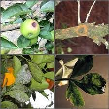
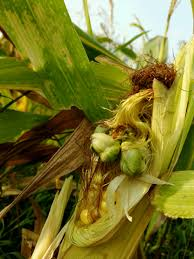

Penyakit Hawar Daun Bakteri

Penyakit hawar daun ini merupakan bakteri yang tersebar luas dan dapat menurunkan hasil panen yang cukup signifikan. Penyakit ini menyerang saat kondisi musim hujan atau musim kemarau yang basah, terutama pada lahan sawah yang selalu tergenang dan kandungan pupuk N tinggi. Penyakit ini disebabkan bakteri Xanthomonas campestris pv oryzae.
Penyakit layu fusarium
Layu fusarium adalah salah satu jenis penyakit yang umum menyerang tanaman budidaya. Serangan penyakit fusarium ini dapat dikategorikan sebagai serangan penyakit yang berbahaya, karena dapat menyebabkan kerugian yang cukup besar bagi para petani. Layu Fusarium (Fusarium wilt) disebabkan oleh jamur Fusarium oxysporum. Jenis jamur ini adalah jenis jamur yang patogen/merugikan bagi tanaman budidaya.Jenis penyakit ini sering menyerang tumbuhan tembakau, penyakit ini disebabkan karena adanya virus TMV yang membuat daun tembakau menjadi kuning. Adolf Meyer (1883) menunjukkan pertama kali bahwa gejala mosaik ini dapat menular, seperti penyakit bakteri.
Penyakit bercak daun

Penyakit bercak daun disebabkan oleh cendawan Cercospora capsici, pada daun yang terserang terdapat bintik-bintik bulat dan berwarna hitam kecoklatan. Lama kelamaan daun menguning dan akhirnya rontok.